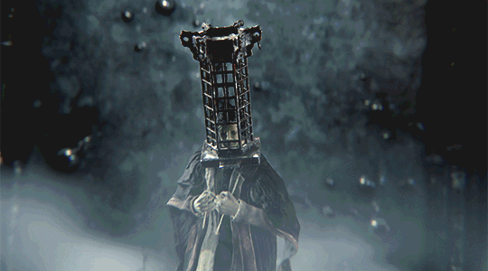

Micolash, Host of the Nightmare

Description
Micolash is one of the scholars of Mensis. As seen before being transported into
the Lecture Hall, the Hunter enters a room full of mummified corpses with cages.
It was said that a ritual attempt to beckon the moon was made and so, it is possible
that Micolas ended up an anchor point between the Waking World and the Nightmare.
Tips
- Do not be greedy with attacks, as he dodges quite often and can chain with an attack.
- Bait his tentacle attack to dodge sideways and throw in a few attacks.
- During his 2nd phase, avoid the homing stars spell by dodging into Micolash as the stars launch.